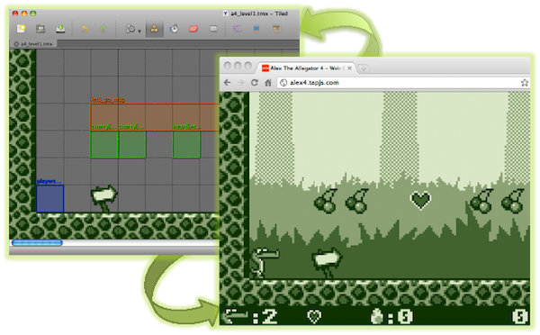

melonJS is the result of our enthusiasm and past experiments with Javascript, and came from the feeling that no simple, free and standalone library was available to develop games. And although still a big work in progress (and not yet bug free), melonJS already allows to easily create some nice games (see the Gallery page)
melonJS integrates the popular Tiled map format, allowing to easily design levels using the Tiled map editor, and to focus on the game features itself.
Along necessary bug fixing, some other nice features are still to come, so please come back regulary, or even join the project if you wish !
Feature list :
- A fresh and lightweight 2D sprite-based engine
- Standalone library (does not rely on anything else, except a HTML5 capable browser)
- Compatible with most major browser (Chrome, Safari, Firefox, Opera)
- Multiple Audio Channel support
- Basic physics and collision mechanisms (to ensure low cpu requirements)
- A basic set of Object Entities (to be extended)
- Tween effects
- Transition effects (state and/or level change)
- Manage basic animation
- A state manager (to easily manage loading, menu, options or in-game screen state and switch)
- Tiled map format version 0.6.x integration for easy level design :
- uncompressed XML, Base64 and CSV encoded XML tilemap format
- Orthogonal tilemap
- Multiple layers (multiple background/Foreground layers, collision layer, "Parallax" layer)
- Layers Alpha settings
- Tileset Transparency settings
- Tiled Object
- Dynamic Layer and Object/Group ordering
- Dynamic Entity loading (melonJS will instantiate JS object matching the object property name defined in the tilemap)
- Solid, Platform, Slope and Breakable Tiles
- System and bitmap fonts
- some basic GUI elements
- a customizable loader, etc. . .
Browser Compatibility
See below about melonJS and compatibility with the various existing browsers. However, as of today, Google Chrome 12 (or upper) is highly recommended, as it both provides the best javascript engine, and finally got rid of all the audio issues present in the previous version.
| Browser | Version | Status |
|---|---|---|
| Chrome | 12, 13 | fully working |
| Chrome | 11 | sound issues |
| Safari | 5 | fully working |
| Firefox | 4 | fully working |
| Opera | 11 | fully working |
| IE | 9, 10 | fully working |